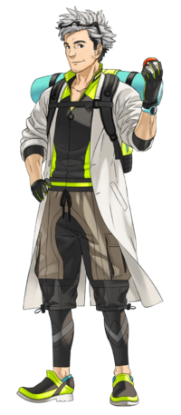

Bienvenidx a Pokémon New Lover
¡Hola amigx!

Soy el Profesor Willow y me gusta investigar a los Pokémon y sus hábitats. Quiero invitarte a
Pokémon Go y me ayudes a atraparlos y estudiarlos.
En esta página podrás conocer más acerca de los Pokémon, en qué tipos se dividen, sus habilidades,
debilidades y cuántos dulces necesitan para evolucionar. Así podrás jugar y hablar de los Pokémon como
un master, un Pokémon New Lover.